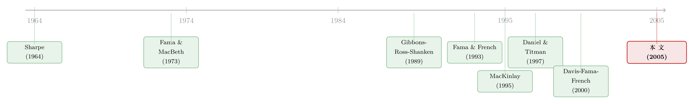

贝塔还是特征？——公司债收益里那场被忽略的「站队」
本文读的是 Gebhardt, Hvidkjaer & Swaminathan (2005, Journal of Financial Economics)：在公司债的横截面里，违约贝塔 (default beta) 即便在控制了评级、久期、到期收益率之后，仍显著地解释了平均收益；而评级、久期这两个「特征」一旦控制住贝塔就失去了解释力。换句话说，在股票市场争得不可开交的「贝塔还是特征」之争，到了公司债这边，贝塔赢了——只有到期收益率是个例外，它带着非风险因素的味道。
1 一个被搁置了十几年的老问题，换个赛场重打
现代金融学最干净利落的一个预言是：一只证券的预期收益，应该只由它承担的系统性风险决定（Sharpe, 1964; Lintner, 1965; Mossin, 1966; Ross, 1976）。这句话漂亮得近乎信仰。可是 Fama and French (1992, 1993) 一记重拳打下来——资本资产定价模型 (capital asset pricing model, CAPM) 里那个本该唱主角的 贝塔 (beta)，在解释股票横截面收益时几乎一无是处；真正管用的，是公司规模、账面市值比 (book-to-market) 这些特征 (characteristics)。
于是争论就来了。Daniel and Titman (1997) 说，特征比因子载荷 (factor loadings) 更重要，特征本身可能就是市场错误定价的代理；Davis, Fama, and French (2000) 不服，用更长的样本反驳：特征不过是因子载荷的影子，真正定价的还是贝塔。
这场仗在股票市场打得难解难分，原因恰恰在于股票太难了——规模、账面市值比这些特征，到底对应着什么「风险」，谁也说不清。它们既可能是风险载荷，也可能是行为偏差的痕迹。特征和贝塔在股票里，连「谁该是风险」都没法对齐。
接着，一个自然的问题是：能不能换个赛场？换一个贝塔和特征都有明确风险含义的市场，重新打一遍这场仗？
公司债就是这样一个理想的赛场。本文三位作者——Gebhardt、Hvidkjaer、Swaminathan——把战线拉到了公司债的横截面上。这里的好处是双重的：其一，研究公司债横截面收益的文献本来就少，几乎是块处女地；其二，公司债的风险因子好认。一只债券要么怕利率动（期限风险），要么怕发行人违约（违约风险）。对应地，因子载荷有 违约贝塔 和 期限贝塔 (term beta)，特征有 评级 (ratings) 和 久期 (duration)。
这里有个微妙之处值得先点破：在债券里，贝塔和特征都有风险含义，区别只在于度量的是哪一种风险。因子载荷度量的是系统性风险，而评级、久期这类特征度量的更接近总风险。更要命的是——因为贝塔是用历史数据估出来的，带着噪声；而评级、久期是当下最新鲜的信息。所以完全可能出现：评级、久期反而是「真实但不可观测的贝塔」的更好代理。这一层张力，是全文的暗线。
2 识别策略：先把「特征」和「贝塔」拆开
要判断到底是贝塔还是特征在定价，核心难题是它们彼此高度相关（后面会看到，违约贝塔和评级的相关系数有 0.33，期限贝塔和久期有 0.64）。直接放进一个回归里，谁都说不清是谁的功劳。作者用了两套互补的方法。
第一套：双向分组 (bivariate sorts)，沿用 Daniel and Titman (1997) 的思路。 先按评级和久期把债券分成组，在每一个评级–久期组内部再按违约贝塔或期限贝塔细分。这样一来，组内的评级、久期基本被「冻住」了，剩下的收益差异就只能归给贝塔。然后再反过来做一遍：先按贝塔分组，组内再看评级、久期能不能挤出额外的收益变化。一句话——用分组把对方摁住，看自己还剩多少解释力。
第二套：Fama and MacBeth (1973) 横截面回归的一个变体，具体形式来自 Brennan, Chordia, and Subrahmanyam (1998)，直接在个券层面上做回归，好处是能同时控制多个风险变量。
两套方法的逻辑是一致的：谁能在控制住对方之后还站得住，谁就是真正在定价。
3 数据：一份最好的公司债数据库
数据来自 雷曼兄弟固定收益数据库 (Lehman Brothers Fixed Income Database, LBFI)，覆盖 1973 年 1 月到 1996 年 12 月。这是当年学术研究能拿到的最好的公司债数据库——月末买价、评级、收益率一应俱全，而且大部分报价是至少 500 手整批交易的真实交易商报价，而非靠算法拼出来的矩阵价格 (matrix prices)。Hong and Warga (2000) 验证过，LBFI 的买价和真实成交价吻合得相当好。
样本筛选相当克制：每只债券必须付息、至少三年到期、且上月被 S&P 或 Moody's 评为投资级（BBB-/Baa3 或更高）。非投资级被剔除，因为雷曼直到 1992 年才开始发布高收益指数。最终样本平均每年约 2,880 只公司债。所有组合收益都按上月末市值加权——既压低了个别坏价格的偏差，也保证了策略可投资。月度收益的算法老老实实地把应计利息和票息算了进去：
$$r_{t+1} = \frac{(P_{t+1}+AI_{t+1})+C_{t+1}-(P_t+AI_t)}{P_t+AI_t}$$
这里 \(P_t\) 是 \(t\) 时刻的报价，\(AI_t\) 是应计利息，\(C_{t+1}\) 是半年付一次的票息。
一个常被忽略的细节：虽然整体样本始于 1973 年，但因为估计贝塔需要前 5 年（60 个月）数据，实证检验实际只用 1978–1996 年，共 228 个月度观测。组合形成月和开始计算未来收益之间还特意留了一个月的间隔，以避开微观结构噪声。
4 两因子模型：在公司债身上的「干净」一面
沿着 Fama and French (1993)，作者只用两个因子。TERM 是长期政府债月收益与一个月国库券收益之差，代理期限风险；DEF 是「所有至少十年到期的投资级公司债的市值加权收益」减「长期政府债收益」，代理违约风险。市场因子被故意丢掉了——经验上它对公司债几乎没有解释力，加进去只会给回归添噪声。理论上，这个两因子结构可以由 跨期资本资产定价模型 (Intertemporal CAPM, ICAPM) 来辩护：两个因子是对冲经济中潜在违约风险与期限风险的候选组合。
两因子模型本身是这样一个时间序列回归：
先看因子本身的「性格」。违约因子 DEF 的月均溢价只有 0.04%，标准差却高达 1.20%——单看这个数，你几乎没法拒绝「违约溢价为零」。但作者提醒：0.04% 这个量级，恰恰和 BBB 债与 AAA 债之间 0.07% 的月均收益差是可比的。也就是说，公司债横截面的收益差异本来就小（远小于股票），所以一个看似微弱的违约溢价，仍可能是横截面变化的重要决定因素。期限因子 TERM 月均 0.20%、标准差 3.18%，两个因子的相关系数是 -0.43。
更让人安心的是：把四个评级组合（AAA、AA、A、BBB）放进这个两因子模型，它能解释 93% 到 99% 的时间序列变化，而且 BBB 债的违约贝塔（1.08）确实高于 AAA（0.82）。最关键的是 Gibbons, Ross, and Shanken (1989) 联合检验——它检验四个截距是否同时为零：
$$\theta = \left[\frac{T-N-K}{N}\right]\left[1+m'\Omega^{-1}m\right]^{-1} a'\Sigma^{-1}a$$
其中 \(a\) 是截距向量，\(\Sigma\) 是残差协方差矩阵，\(m\) 与 \(\Omega\) 分别是因子超额收益的均值向量与协方差矩阵，统计量服从 \(F_{(N,\,T-N-K)}\) 分布。结果：\(F = 0.781\)，\(p = 0.54\)——截距全为零的原假设根本拒绝不了。两因子模型在给评级组合定价上，设定得相当干净。
这一步很重要，因为它先立了个标杆：模型在「按评级排序」的组合上表现良好。 那么它在「按贝塔排序」「按收益率排序」的组合上呢？这才是后面戏剧性反转的伏笔。
5 反转：单变量分组里，贝塔说了算
现在进入全文最精彩的一节。把债券分别按评级、久期、违约贝塔、期限贝塔做单变量排序，看高低组之间的收益差，并报告经久期/评级调整后的收益差（剔除特征的影响）。
先看两个「特征」：
- 按评级从 AAA 到 BBB，月均收益差只有
0.07%，t 值1.31；久期调整后0.06%，t 值1.51——都不显著。 - 按久期排序，最高减最低的收益差
0.04%，t 值0.37；评级调整后甚至变成-0.01%（t =-0.67）——彻底失灵。
再看两个「贝塔」：
- 按违约贝塔排序（从
0.40到1.65），月均收益从0.21%一路升到0.35%，收益差0.13%，t 值2.54；久期和评级双调整后，收益差还有0.07%，t 值3.37——不仅没消失，反而更显著了。 - 按期限贝塔排序，收益差
0.11%（t =1.00），双调整后0.07%（t =1.66）——比违约贝塔弱一截，但方向一致。
于是反转出现：评级和久期单独看几乎不挑收益，违约贝塔却能稳稳地挑出一道单调上升的收益阶梯。 当作者把特征控制住，违约贝塔的解释力反而被「擦得更亮」。这正好印证了那条暗线——评级、久期之所以和收益沾边，多半是因为它们是系统性违约/期限风险的代理；一旦把真正的风险载荷拿出来，特征就只剩下一个空壳。
（公司债里风险与收益究竟有没有正向权衡，是个独立而有趣的问题，可参见《公司债里，风险终于换来了收益》。）
6 但故事没那么干净：到期收益率的「异味」
如果全文到此为止，那就是一曲风险定价的赞歌。可作者诚实地留了一个刺——到期收益率 (yield-to-maturity)。
在 Fama-MacBeth 个券回归里，唯一一个表现优于违约贝塔的变量，就是到期收益率。而且它在控制了违约贝塔、期限贝塔之后，依然显著正相关于平均收益——说明它携带着独立于贝塔的信息。
这个信息是风险吗？作者用了一个漂亮的检验。他们分别给「按违约贝塔排序」和「按收益率排序」的组合做事后两因子回归，看截距（即模型解释不了的 alpha）：
- 两组的截距都显著非零，但按收益率排序的组合，截距在量级上是按违约贝塔排序组合的四倍，且显著得多。
- 更狠的是 MacKinlay (1995) 提出的事前夏普比率 (ex ante Sharpe ratio)：按收益率排序的组合达到
1.37，是按违约贝塔排序组合的一倍半还多。
这个 1.37 大得不像话。MacKinlay 的逻辑是：如果一个策略的事前夏普比率高到一个遗漏的风险因子都解释不了的程度，那它更可能来自非风险因素——实证方法的偏差、市场摩擦，或者干脆就是市场无效。相比之下，按违约贝塔排序组合的事前夏普比率，则与「存在遗漏风险因子」是相容的。
换句话说：违约贝塔挑出的收益差，看起来像对风险的补偿；而到期收益率挑出的那部分，则更像错误定价。
7 文献脉络
把这条线索捋一捋。源头是 CAPM 的纯粹信仰——Sharpe (1964)、Lintner (1965)、Mossin (1966)，再到 Ross (1976) 的套利定价。检验工具上，Fama and MacBeth (1973) 给了横截面回归的范式，Gibbons, Ross, and Shanken (1989) 给了检验组合有效性的 GRS 统计量。
转折点是 Fama and French (1992, 1993)：贝塔在股票上失灵，特征上位。紧接着 Daniel and Titman (1997) 与 Davis, Fama, and French (2000) 就「特征还是因子载荷」打成了一场拉锯战。而 Fama and French (1993) 同时也为债券留下了那个两因子（违约+期限）的处方。

本文站在哪儿？它把 Daniel-Titman 的方法论（双向分组）和 Brennan, Chordia, and Subrahmanyam (1998) 的个券 Fama-MacBeth 回归，搬到了一个风险含义更清晰的赛场——公司债——并借 MacKinlay (1995) 的事前夏普比率作为「风险 vs 非风险」的标尺。它的位置，是把那场关于股票的争论，在一个能讲清楚的市场里给出了一个相对干净的答案。
（关于贝塔在合适的设定下能否重新「收编」那些异象，可参见《会「看天」的 beta：当风险收编了价值与规模，动量却躲进了商业周期》。）
8 评论与延伸（Q&A + 研究方向）
(a) 几个可能的疑问
Q：这篇文章和股票里的「贝塔 vs 特征」之争，本质区别在哪？
在股票里，规模、账面市值比这些特征到底代不代表风险，本身就是争论的核心，所以贝塔和特征「不可比」。在债券里，作者强调贝塔和特征都有清楚的风险含义，区别只是因子载荷度量系统性风险、特征更接近总风险。这让债券成为一个能把问题问清楚的干净实验场。
Q：违约溢价月均才 0.04%，标准差却有 1.20%，这点溢价能当真吗？
关键在于参照系。
0.04%单看可以忽略，但它和 BBB 与 AAA 之间0.07%的月均收益差是同一量级，而公司债横截面的收益变化本来就远小于股票。所以在债券这个「小变化」的世界里，违约贝塔仍可能是横截面的重要决定因素——这不矛盾。
Q：既然评级、久期是「当下最新信息」，凭什么输给带噪声的估计贝塔？
这恰恰是本文最反直觉的结果。理论上特征可能是「真贝塔」的更好代理，但实证上，一旦把贝塔分出来，评级和久期就不再挑收益（久期调整后甚至是负的）。结论是：评级、久期之所以和收益相关，主要是因为它们是系统性风险的代理，本身没有独立的定价信息。
Q：那到期收益率为什么是个例外？它不也是「特征」吗？
是，而且是唯一一个在控制贝塔后仍显著的特征。但作者通过事前夏普比率指出，按收益率排序组合的夏普比率高达
1.37，大到遗漏风险因子都解释不了，所以它更像非风险因素（方法偏差、摩擦或无效）造成的。它和违约贝塔的「风险补偿」属性不同。
Q：只用投资级、剔除高收益债，会不会把最有意思的违约风险也剔掉了？
这是个真实的局限。雷曼直到 1992 年才有高收益指数，所以样本被迫限于投资级。结果是违约风险的横截面变化被压缩了——如果纳入垃圾债，违约贝塔的定价能力很可能更强、收益差更大。所以本文的结论某种意义上是保守的。
Q：月末单一做市商买价、约 10% 债券因不明原因退出，会不会污染结果？
作者做了不少防护：市值加权能稀释个别坏价格的影响，剔除非付息债和短久期债以减少定价误差，组合形成与计算收益之间留一个月间隔。每年因不明原因退出的发行人不足一家，退市偏差有限。结果用「仅交易商报价」子样本也定性稳健。
(b) 几个可能的研究问题与提案
1. 把战场扩到高收益债与 TRACE 时代
【经济故事】本文受限于投资级和月末报价。今天有了 TRACE 的逐笔成交、覆盖高收益的久期，违约风险的横截面变化大得多。重做这场「贝塔 vs 特征」，违约贝塔会更强，还是会被高收益债特有的流动性特征反超？ 【可行性】高。数据成熟（TRACE + Mergent FISD），识别策略可直接沿用双向分组 + Fama-MacBeth，唯一要小心的是把流动性当成第三类「特征」一起控制。
2. 给「到期收益率溢价」找一个非风险机制
【经济故事】本文已指出收益率溢价像错误定价，但没说清是什么。是流动性、是评级机构的滞后、还是投资者对高票息债的偏好？把收益率拆成「信用利差 + 流动性溢价 + 久期」三块分别检验，能定位这块异味的真正来源。 【可行性】中。需要干净的流动性度量（如 Roll、Amihud 或基于成交的指标）和发行层面的信息；难点在于把收益率内生的多重含义分离开。
3. 外资持有人与公司债的违约贝塔定价
【经济故事】如果某类边际投资者（如外资、保险公司）对违约风险的定价不同，那么违约贝塔的溢价就该随持有人结构而变。本文把市场当成同质的，但持有人结构可能让违约溢价在不同债券间「定价不一致」。 【可行性】中。需要 eMAXX 或保险持仓 (NAIC) 这类持有人层面数据，识别可借助持有人构成的横截面差异；挑战是持有人结构与债券特征内生相关，需要工具或事件冲击。
4. 事前夏普比率作为「风险 vs 错误定价」的通用判据
【经济故事】MacKinlay (1995) 的事前夏普比率在本文里是个利器——它把「这是遗漏因子还是无效」量化成一个阈值。能不能把它系统地套用到公司债的一整套异象（动量、低风险、发行量）上，给每个异象打一个「像风险／像错误定价」的分数？ 【可行性】高。方法纯统计，数据就是已有的异象组合收益；价值在于给信用市场的异象做一次统一的「体检」。
参考文献
- Brennan, M., Chordia, T., Subrahmanyam, A. (1998). Alternative factor specifications, security characteristics, and the cross-section of expected stock returns. Journal of Financial Economics 49, 345–373.
- Daniel, K., Titman, S. (1997). Evidence on the characteristics of cross sectional variation in stock returns. Journal of Finance 52, 1–33.
- Davis, J.L., Fama, E.F., French, K.R. (2000). Characteristics, covariances, and average returns: 1929–1997. Journal of Finance 55, 389–406.
- Fama, E., French, K.R. (1993). Common risk factors in the returns of stocks and bonds. Journal of Financial Economics 33, 3–56.
- Fama, E., MacBeth, J. (1973). Risk, return, and equilibrium: empirical tests. Journal of Political Economy 71, 607–636.
- Gibbons, M.R., Ross, S.A., Shanken, J. (1989). A test of the efficiency of a given portfolio. Econometrica 57, 1121–1152.
- Hong, G., Warga, A. (2000). An empirical study of bond market transactions. Financial Analysts Journal 56, 32–46.
- Lintner, J. (1965). The valuation of risky assets and the selection of risky investments in stock portfolios and capital budgets. Review of Economics and Statistics 47, 13–37.
- MacKinlay, C.A. (1995). Multifactor models do not explain deviations from the CAPM. Journal of Financial Economics 38, 3–28.
- Mossin, J. (1966). Equilibrium in a capital asset market. Econometrica 35, 768–783.
- Ross, S.A. (1976). The arbitrage theory of capital asset pricing. Journal of Economic Theory 13, 341–360.
- Sharpe, W.F. (1964). Capital asset prices: a theory of market equilibrium under conditions of risk. Journal of Finance 19, 425–442.
我的判断是：这篇论文最大的贡献，不在于「证明了贝塔有用」，而在于它换了一个能把问题问清楚的市场，从而让那场在股票里注定缠夹不清的「贝塔 vs 特征」之争，得到了一个相对干净的答案——在公司债里，至少违约贝塔是真在定价的。这一点本身就值得记住，因为在实证资产定价里，系统性风险常常像幽灵一样抓不住；而这里，它显形了。
要担忧的也很清楚。其一，样本被迫限于投资级、用的是月末单一做市商报价，违约风险的横截面变化被人为压缩，结论偏保守；其二，到期收益率那块「异味」其实是全文最有张力的发现，但论文只是诊断出它不像风险，没能进一步定位它是流动性、是评级滞后、还是行为偏差——这反而是最该追下去的线索。后续我最想看到的，是把这套检验搬到 TRACE 时代、纳入高收益债，并把到期收益率溢价拆解到底——那很可能才是信用市场真正的「钱」所在的地方。